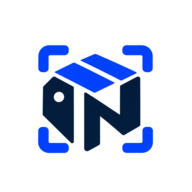

GESTÃO PATRIMONIAL
Painel geral

Instale o InventárioAbra direto da área de trabalho ou da tela inicial do celular, em janela própria.
Prontos para retirada
Retiradas em aberto
Indisponíveis no momento
Movimentações recentes
Últimas retiradas e devoluções registradas
| Data/hora | Equipamento | Tipo | Responsável |
|---|---|---|---|
| Carregando… | |||
Ações rápidas
Cadastro de equipamentos
Cadastre, edite, consulte e exporte seu inventário.
| TAG / Patrimônio | Equipamento | Categoria | Localização | Estado | Situação | Ações |
|---|---|---|---|---|---|---|
| Carregando… | ||||||
Retiradas e devoluções
Registre cada retirada e finalize com a devolução do equipamento.
| Data/hora | Equipamento | Tipo | Responsável | Retirada | Devolução | Ação |
|---|---|---|---|---|---|---|
| Carregando… | ||||||
Termos emitidos por dia
Localize termos finalizados pela data efetiva da retirada ou devolução. A consulta inclui somente o ciclo atual.
| Data da ação | TAG | Equipamento | Responsável | |
|---|---|---|---|---|
| Selecione uma data para consultar os termos. | ||||
Relatórios do inventário
Filtre os dados, confira a prévia e exporte em PDF, Excel ou CSV.
Carregando dados do relatório…
| Carregando… |
Gerenciamento de usuários
Crie contas, consulte os usuários cadastrados, altere senhas ou remova acessos.
Convite para autocadastro
Somente administradores geram links. Cada convite expira em 48 horas, permite um cadastro e atribui o perfil Consulta. Para que a pessoa registre retiradas e devoluções, altere o perfil dela para Operador na lista abaixo.
Convites pendentes
Links gerados que ainda não foram usados nem venceram. Cancele os que não serão mais usados: o link deixa de funcionar na hora.
| Gerado em | Gerado por | Vence em | Ação |
|---|---|---|---|
| Clique em Atualizar lista para carregar os convites. | |||
Novo usuário
O usuário poderá entrar com o e-mail e a senha definidos aqui.
Usuários cadastrados
A senha não é exibida pelo sistema; você pode definir uma nova.
| Nome | Acesso | Criado em | Último acesso | Ações | |
|---|---|---|---|---|---|
| Clique em Atualizar lista para carregar os usuários. | |||||
Trilha de auditoria
Ações administrativas registradas pelo sistema: usuários, convites, edições e exclusões de equipamentos, arquivamentos e importações. Retiradas e devoluções ficam no histórico de movimentações. Os registros não podem ser alterados nem apagados.
| Data/hora | Quem | Ação | Item | Detalhes |
|---|---|---|---|---|
| Nenhum registro carregado. | ||||
Arquivamento do inventário
Crie um novo ciclo com listas vazias, mantendo o histórico guardado.
O arquivamento inclui equipamentos e retiradas/devoluções juntos. Conclua as devoluções pendentes antes de arquivar. Somente administradores podem executar esta ação.
Arquivos anteriores
Consulte, exporte, restaure ou exclua um período. A exclusão é permanente e preserva os dados do ciclo atual. A restauração exige listas atuais vazias.
| Arquivo | Arquivado em | Equipamentos | Movimentações | Ações |
|---|---|---|---|---|
| Nenhum arquivo carregado. | ||||
Detalhes do arquivo
Equipamentos arquivados
| TAG | Patrimônio | Descrição | Situação |
|---|
Retiradas e devoluções arquivadas
| Data | Equipamento | Tipo | Responsável | Devolução |
|---|